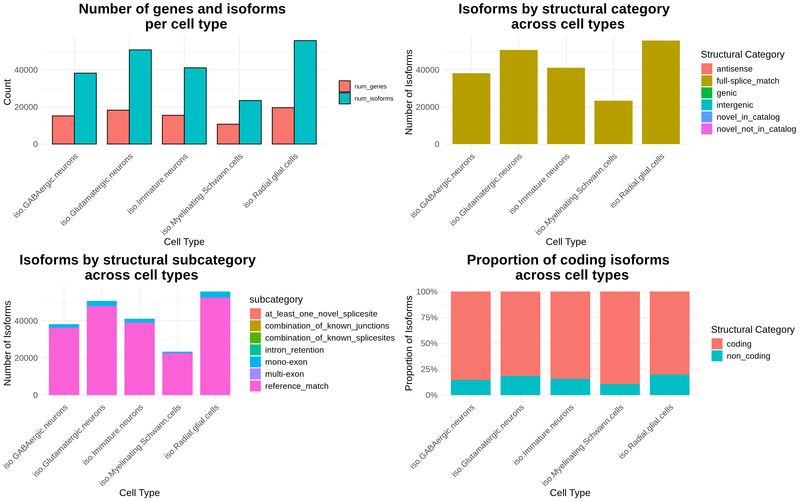
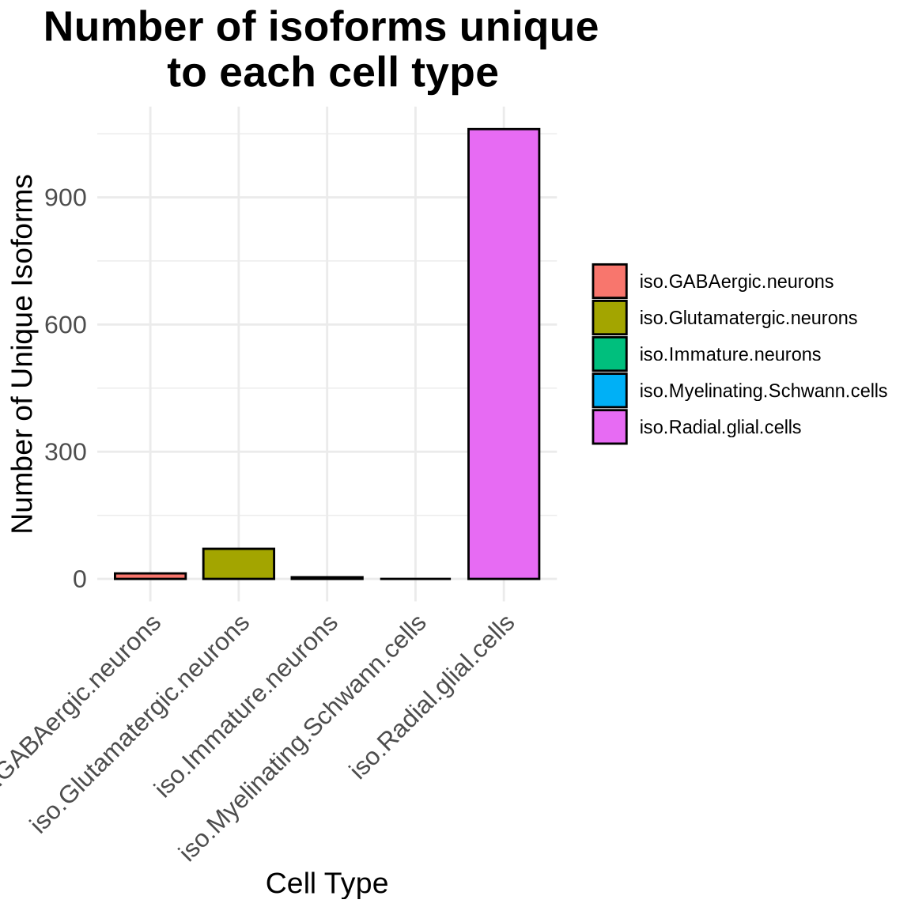

Chapter 7 Isoform Classification
7.1 Classification with SQANTI
In the previous Chapter we looked at some genes of interst like MCAF1 and some of the isoforms related to this gene. As you can see MCAF1 is a highly complex gene with many exons, varied Transcription strat sites and many splice junctions. Evaluating this information manually for each isoform is complex and time consuming. A tool that that is very useful here is SQANTI3 (Pardo-Palacios et al., 2024) which will categorize our isoforms2 and determine whether they are coding or non-coding.
If you install SQANTI3 and run the following command in your FLAMES output folder you will generate a classifications.txt file. This output file is located in the data folder on the github page. SQANTI can also generate an HTML report with lots of figures summarizing your isoforms which can be very helpful. We will do something similar but instead plot this information stratified by cell type.
GTF="gencode.v47.annotation.gtf" genome="genome.fa"
#filter gtf file to remove. strands
awk '$7 == "+" || $7 == "-"' isoform_annotated.gtf > remove_unknownstrand.gtf
#run SQANTI
python3 SQANTI3-5.2.1/sqanti3_qc.py remove_unknownstrand.gtf ${GTF} ${genome}
If we examine the classifications file, we can see that each isoform in our GTF file has been categorized based on its structural characteristics, coding potential, and additional attributes.
Code
SQANTI <- read.csv("data/remove_unknownstrand_classification.txt", sep ='\t')
#SQANTI$isoform <- sub("\\..*", "", SQANTI$isoform) # remove numbers after .
head(SQANTI, 3)## isoform chrom strand length exons structural_category associated_gene associated_transcript ref_length ref_exons diff_to_TSS diff_to_TTS diff_to_gene_TSS
## 1 BambuTx1 chr1 + 2381 3 novel_in_catalog ENSG00000294260.1 novel 1694 2 NA NA -2481
## 2 BambuTx2 chr1 - 595 2 antisense novelGene_ENSG00000302070.1_AS novel NA NA NA NA NA
## 3 ENST00000003583.12 chr1 - 2544 8 full-splice_match ENSG00000001460.18 ENST00000003583.12 2544 8 0 0 0
## diff_to_gene_TTS subcategory RTS_stage all_canonical min_sample_cov min_cov min_cov_pos sd_cov FL n_indels n_indels_junc bite iso_exp gene_exp ratio_exp
## 1 -17 combination_of_known_splicesites FALSE canonical NA NA NA NA NA NA NA FALSE NA NA NA
## 2 NA multi-exon FALSE canonical NA NA NA NA NA NA NA FALSE NA NA NA
## 3 0 reference_match FALSE canonical NA NA NA NA NA NA NA FALSE NA NA NA
## FSM_class coding ORF_length CDS_length CDS_start CDS_end CDS_genomic_start CDS_genomic_end predicted_NMD perc_A_downstream_TTS seq_A_downstream_TTS dist_to_CAGE_peak
## 1 C non_coding NA NA NA NA NA NA NA 75 TAAAAAAAAAAAATAAGTGA NA
## 2 A non_coding NA NA NA NA NA NA NA 95 AAAAAAAAAAAAAAGAAAAA NA
## 3 C coding 122 369 1009 1377 24358540 24358172 FALSE 15 TATTGAGCTTTTGGGTACCC NA
## within_CAGE_peak dist_to_polyA_site within_polyA_site polyA_motif polyA_dist polyA_motif_found
## 1 NA NA NA NA NA NA
## 2 NA NA NA NA NA NA
## 3 NA NA NA NA NA NA
## ORF_seq ratio_TSS
## 1 <NA> NA
## 2 <NA> NA
## 3 MSHKVKENSSHQPTLPSVPRTFLRRRPIMSVAADNLGGGSTTLAWHPSRTAAIAFVLSWRHCSLETSPQPHRLQWLPEQKGGVDRAPWLLPHAPIQAAFRHDSLPQTEGTPEAQTSRRISPP NAIn this file there is lots information one can extract to get a more complete picture of the isoforms in your sample. Lets plot some of this information.
Code
#we can use the pseudobulk_data counts calculated previously
# Select cell type columns and gather into long format
long_data <- pseudobulk_data %>%
pivot_longer(
cols = starts_with("iso."),
names_to = "cell_type",
values_to = "expression"
)
# Filter for non-zero expression to identify genes and isoforms expressed in each cell type
filtered_data <- long_data %>%
filter(expression > 0) %>%
dplyr::select(cell_type, transcript_id, gene_id) %>%
distinct()
# Calculate unique gene and isoform counts for each cell type
cell_type_summary <- filtered_data %>%
group_by(cell_type) %>%
summarise(
num_genes = n_distinct(gene_id),
num_isoforms = n_distinct(transcript_id)
) %>%
pivot_longer(cols = c(num_genes, num_isoforms),
names_to = "Category",
values_to = "Count")
# Plot the data
p1 <- ggplot(cell_type_summary, aes(x = cell_type, y = Count, fill = Category)) +
geom_bar(stat = "identity", position = "dodge", color = "black", width = 0.8) +
theme_minimal() +
labs(title = "Number of Genes and Isoforms per cell type",
x = "Cell Type",
y = "Count") +
theme(
plot.title = element_text(size = 20, face = "bold", hjust = 0.5),
axis.title.x = element_text(size = 14),
axis.title.y = element_text(size = 14),
axis.text.x = element_text(size = 12, angle = 45, hjust = 1),
axis.text.y = element_text(size = 12),
legend.title = element_blank()
)
# plot the structural category per cell type
merged_data <- merge(pseudobulk_data, SQANTI,
by.x = "transcript_id",
by.y = "isoform",
all.x = TRUE)
# Pivot pseudobulk data to long format for cell types
long_data <- merged_data %>%
pivot_longer(
cols = starts_with("iso."),
names_to = "cell_type",
values_to = "expression"
)
# Generate outr new df thatw e can use for plotting attributes deffiend by cell type
filtered_data <- long_data %>%
filter(expression > 0) %>%
distinct()
# Calculate unique counts of genes and isoforms per structural category and cell type
category_summary <- filtered_data %>%
group_by(cell_type, structural_category, subcategory, coding) %>%
summarise(
num_genes = n_distinct(gene_id),
num_isoforms = n_distinct(transcript_id),
.groups = "drop"
)
# Plot number of isoforms per structural category for each cell type
p2 <- ggplot(category_summary, aes(x = cell_type, y = num_isoforms, fill = structural_category)) +
geom_bar(stat = "identity", position = "stack", width = 0.8) +
theme_minimal() +
labs(
title = "Isoforms by Structural Category Across Cell Types",
x = "Cell Type",
y = "Number of Isoforms",
fill = "Structural Category"
) +
theme(
plot.title = element_text(size = 20, face = "bold", hjust = 0.5),
axis.title.x = element_text(size = 14),
axis.title.y = element_text(size = 14),
axis.text.x = element_text(size = 12, angle = 45, hjust = 1),
axis.text.y = element_text(size = 12),
legend.title = element_text(size = 14),
legend.text = element_text(size = 12)
)
p3 <- ggplot(category_summary, aes(x = cell_type, y = num_isoforms, fill = subcategory)) +
geom_bar(stat = "identity", position = "stack", width = 0.8) +
theme_minimal() +
labs(
title = "Isoforms by Structural subcategory Across Cell Types",
x = "Cell Type",
y = "Number of Isoforms",
fill = "subcategory"
) +
theme(
plot.title = element_text(size = 20, face = "bold", hjust = 0.5),
axis.title.x = element_text(size = 14),
axis.title.y = element_text(size = 14),
axis.text.x = element_text(size = 12, angle = 45, hjust = 1),
axis.text.y = element_text(size = 12),
legend.title = element_text(size = 14),
legend.text = element_text(size = 12)
)
p4 <- ggplot(category_summary, aes(x = cell_type, y = num_isoforms, fill = coding)) +
geom_bar(stat = "identity", position = "fill", width = 0.8) +
theme_minimal() +
labs(
title = "Proportion of coding isoforms across cell types",
x = "Cell Type",
y = "Proportion of Isoforms",
fill = "Structural Category"
) +
scale_y_continuous(labels = scales::percent) + # This will show y-axis as percentages
theme(
plot.title = element_text(size = 20, face = "bold", hjust = 0.5),
axis.title.x = element_text(size = 14),
axis.title.y = element_text(size = 14),
axis.text.x = element_text(size = 12, angle = 45, hjust = 1),
axis.text.y = element_text(size = 12),
legend.title = element_text(size = 14),
legend.text = element_text(size = 12)
)
#Plots
cowplot::plot_grid(p1, p2, p3, p4, ncol = 2)
We can also look at isoforms that are unique to each Cell type. We define unique as an isofroms that has 5 or more counts in one cell type and ≤ 1 count in all other cell types. Users can adjust the thresholds mentioned bellow3.
Code
# Filter the data based on the expression cutoff
# Set expression cutoff threshold
expression_cutoff <- 5
max_expression_in_all_other_cells_types = 1
# Filter isoforms based on the new criteria
exclusive_isoforms <- long_data %>%
group_by(transcript_id) %>%
filter(
# Only one cell type where expression > cutoff
sum(expression > expression_cutoff) <= 1,
# Ensure all other cell types have 0 expression
all(expression < max_expression_in_all_other_cells_types | expression > expression_cutoff)
) %>%
ungroup()
# Count the unique isoforms per cell type
# Adjust counting logic
exclusive_isoforms_count <- exclusive_isoforms %>%
group_by(cell_type) %>%
summarise(
unique_isoforms = sum(expression > expression_cutoff) # Count only isoforms with valid expression
) %>%
ungroup()
# Plot the results
ggplot(exclusive_isoforms_count, aes(x = cell_type, y = unique_isoforms, fill = cell_type)) +
geom_bar(stat = "identity", color = "black", width = 0.8) +
theme_minimal() +
labs(
title = "Number of Isoforms Unique to Each Cell Type",
x = "Cell Type",
y = "Number of Unique Isoforms"
) +
theme(
plot.title = element_text(size = 20, face = "bold", hjust = 0.5),
axis.title.x = element_text(size = 14),
axis.title.y = element_text(size = 14),
axis.text.x = element_text(size = 12, angle = 45, hjust = 1),
axis.text.y = element_text(size = 12),
legend.title = element_blank()
)
These cell type specific isoforms may be particularly interesting to study further, as they likely play important roles in differentiation and cell function. We could extract these isoforms for further analysis.
Lets use another helpful resource to explore these cell type specific isofroms.
We can use the BioMart(Smedley et al., 2009) package to get some more metadata about each isoform. There is lots of data that can be extracted from BioMart. This is just a simple example of what can be done with this cell type specif data.
Code
library("biomaRt")
exclusive_isoforms_uniq <- exclusive_isoforms %>%
filter(expression >= max_expression_in_all_other_cells_types) %>%
arrange(desc(expression))
exclusive_isoforms_uniq$transcript_id <- sub("\\..*", "", exclusive_isoforms_uniq$transcript_id)
# Retrieve gene biotype from Ensembl
mart <- useMart(biomart = "ensembl",
dataset = "hsapiens_gene_ensembl") # Change this to another mirror if available
biotype_info_transcript <- getBM(attributes = c("ensembl_transcript_id", "transcript_is_canonical", 'transcript_biotype', 'transcript_length'),
filters = 'ensembl_transcript_id',
values = exclusive_isoforms_uniq$transcript_id,
mart = mart)
merged_biomart_data <- merge(exclusive_isoforms_uniq, biotype_info_transcript,
by.x = "transcript_id",
by.y = "ensembl_transcript_id",
all.x = TRUE)
# Prepare the summary data
category_summary <- merged_biomart_data %>%
group_by(cell_type, transcript_biotype) %>%
summarise(num_isoforms = n(), .groups = "drop") %>%
group_by(cell_type) %>%
mutate(proportion = num_isoforms / sum(num_isoforms)) %>%
ungroup()
# Ensure consistent factor order for cell_type and transcript_biotype
# Ensure consistent factor order for cell_type and transcript_biotype
category_summary <- category_summary %>%
mutate(
cell_type = factor(cell_type, levels = unique(cell_type)),
transcript_biotype = factor(transcript_biotype, levels = c(
"protein_coding",
"lncRNA",
"non_stop_decay",
"TEC",
"nonsense_mediated_decay",
"protein_coding_CDS_not_defined",
"retained_intron",
"processed_pseudogene",
"snoRNA",
"transcribed_processed_pseudogene"
))
)
# Create the plot
p5 <- ggplot(category_summary, aes(x = cell_type, y = proportion, fill = transcript_biotype)) +
geom_bar(stat = "identity", position = "fill", width = 0.8) +
geom_text(aes(label = scales::percent(proportion, accuracy = 0.1)),
position = position_fill(vjust = 0.5), size = 3) +
theme_minimal() +
labs(
title = "BioMart Structural Categories cell specific isoforms",
x = "Cell Type",
y = "Proportion of Isoforms",
fill = "BioMart structual Category"
) +
scale_y_continuous(labels = scales::percent) +
theme(
plot.title = element_text(size = 20, face = "bold", hjust = 0.5),
axis.title.x = element_text(size = 14),
axis.title.y = element_text(size = 14),
axis.text.x = element_text(size = 12, angle = 45, hjust = 1),
axis.text.y = element_text(size = 12),
legend.title = element_text(size = 14),
legend.text = element_text(size = 12)
)
p6 <- ggplot(merged_biomart_data, aes(x = cell_type, y = transcript_length, fill = cell_type)) +
geom_violin(trim = TRUE, alpha = 0.6) + # Use violin plot for distribution
geom_boxplot(width = 0.1, outlier.size = 0.5, alpha = 0.8) + # Add boxplot for summary statistics
theme_minimal() +
labs(
title = "Transcript Length Distribution Across Cell Types",
x = "Cell Type",
y = "Transcript Length (nt)",
fill = "Cell Type"
) +
theme(
plot.title = element_text(size = 20, face = "bold", hjust = 0.5),
axis.title.x = element_text(size = 14),
axis.title.y = element_text(size = 14),
axis.text.x = element_text(size = 12, angle = 45, hjust = 1),
axis.text.y = element_text(size = 12),
legend.position = "none"
)
cowplot::plot_grid(p5, p6, ncol = 1)References
For more detail about the classification system see the SQANTI publication.↩︎
It is essential to keep in mind that cell type classification, sequencing depth, and the number of cells in each cluster can significantly impact the results, especially in cases where isoforms are expressed at very low levels.↩︎